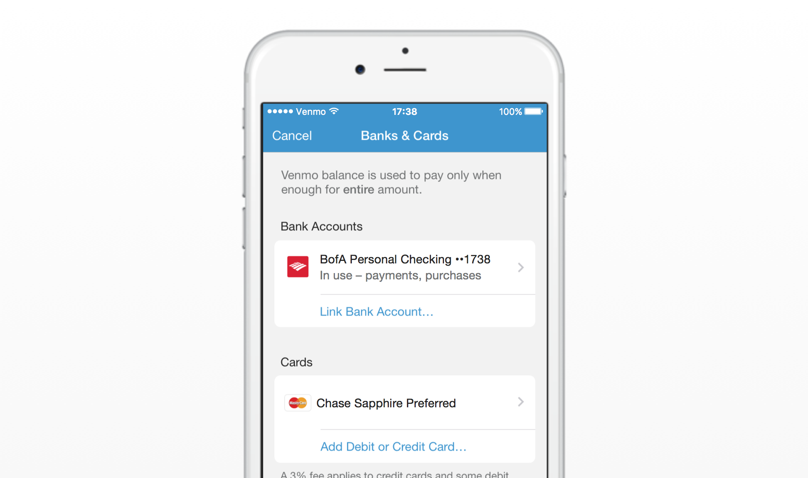
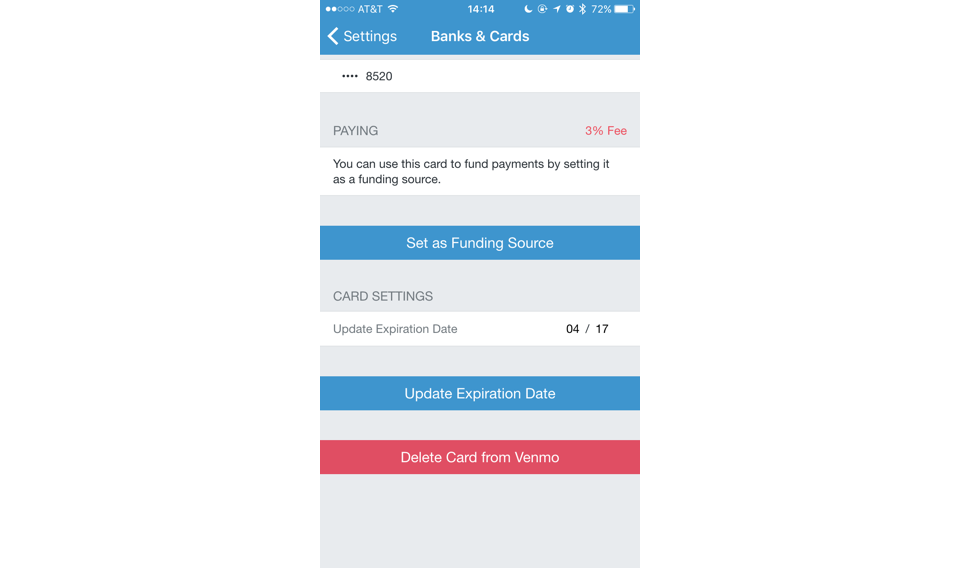
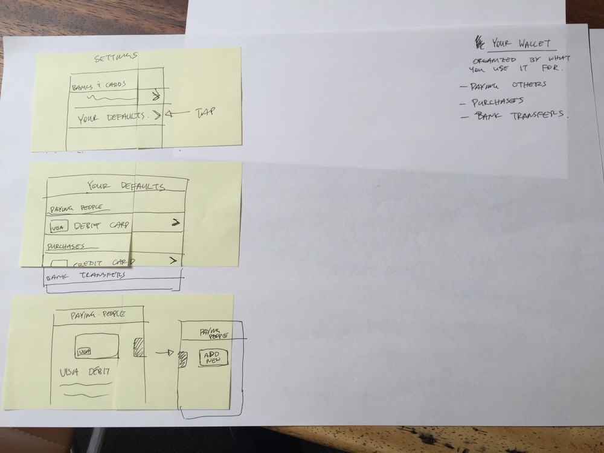
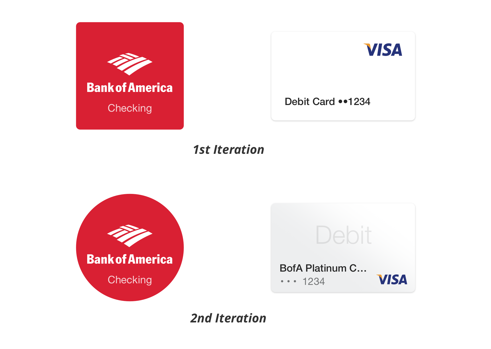
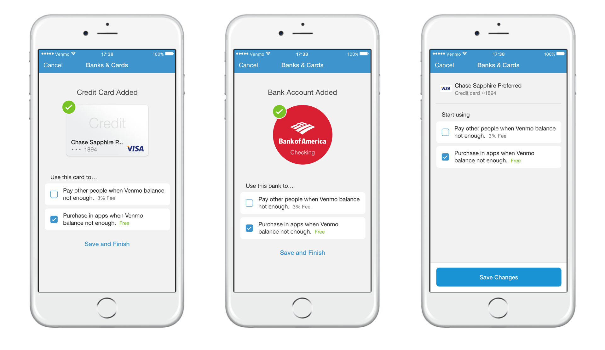

Venmo is responsible for other people's money, so it is crucial that people understand how money operates within the Venmo ecosystem. Venmo is comprised of three different payment methods: bank accounts, debit/credit cards and Venmo balances. Depending on the scenario, there are different rules that apply to how money movement works. At a high level, money moves instantly on Venmo and transactions are free, unless you use a credit card or a debit card from a smaller bank.
There are many nuances with Venmo’s payment methods relating to fees, timing, transferring to banks and type of payments (i.e. paying people or paying merchants). Our most frequent support cases come from issues related to our money system. In order to properly scope this project and not try to tackle a bunch of problems at once, we decided to focus on one task: make it easier to send and receive money on Venmo by simplifying the way one adds and manages banks and cards.
Below are screens that were being used when we started this project.
We used an adaptation of Google Ventures product design sprint. This included phases for understanding the problem, diverging on solutions, deciding on solutions, prototyping and user testing. The project team consisted of an engineer, product manager and product designer. This was an accelerated project with the majority of the work completed within two weeks. There was a huge time constraint to ship the project because it directly affected another significant project that already had a firm deadline to ship.
After we were confident that everyone on the project team fully understood the problem that we were trying to solve, we created a user story (created based on our research and knowledge) that would guide the project. Then we moved on to Phase 2, “Exploration”. Phase 2 of the sprint began with a lot of white boarding and sketching. We aimed to generate as many ideas as possible, while keeping in mind the constraints that we defined during Phase 1. Below are sketches of ideas that came out during one session of Phase 2. Our sketches were very rough; it was really about brainstorming and not getting attached to a single idea.
We took all of the ideas generated during Phase 2 and had mini-critiques on each of them. During Phase 3, we decided on which ideas to move forward with (i.e. prototype and user test) and which ones to discard.
We are big proponents of making quick prototypes and getting it in front of people so that we can validate/test our ideas. For this project, I used a combination of Pixate and Invision to prototype full flows of our concepts and interactions. Building quick prototypes allowed us to get a better idea of how confident we were with a given solution.
Below is an example of a prototype that we used during a user testing session. The user tests helped us identify three things: what we’re confident works, what we’re somewhat confident works and what we’re unsure of. Identifying “confidence levels” allowed us to recognize what needed more work.

After a round of testing, we found that people were having the most trouble understanding (i) the difference between a bank account and a card, and (ii) how Venmo balance works. In order to solve (i), we did more research and developed a ranking of what people tended to look for when identifying a card visually:
See below for an example of how we iterated on the visuals of this concept to help people understand the difference between a bank account and a card. (I understand that the 2nd iteration doesn't completely follow the ranked list above. This decision was made because of constraints at that time. This will be improved during a later phase of this project.)
The 2nd iteration worked a lot better because the card was shaped like a card, and the bank was not. Also, people immediately saw the word “Debit” or “Credit” on the card image, and that helped people correctly associate the image with a card instead of a bank.
A dozen prototypes later, we finally had something that we felt confident about. At this point, it was time to polish UI elements and layouts. Also, because of the time constraint, we had to make some tradeoffs in order to hit the deadline. This meant making hard decisions to define what was required for the MVP.
Below is what shipped as the MVP.
A byproduct of a project such as this is the broad impact on each user’s core experience with Venmo. We’re able to take what worked well, and what didn’t work so well, and apply it to future projects. We’ve also uncovered a lot of useful insights about people’s behaviors that we weren’t aware of previously. Here are a couple things that stood out to me during this project: